Inspiratiesessie Game Programmeren
Maken van een game met behulp van Processing , dat uiteindelijk speelbaar is op een Android telefoon.
Door: Herman Telman
Inleiding
In deze inspiratiesessie(s) ga je (leren) programmeren m.b.v. van Processing. Dit is een programmeertaal en programmeer-omgeving die gebaseerd is op Java en waarmee op vrij eenvoudige manier, grafische, interactieve programmaatjes (en dus ook games) gemaakt kunnen worden.
Verder is de ontwikkelomgeving, het programma wat je gebruikt om code te schrijven, vrij eenvoudig en intuïtief.
En een leuk extraatje is dat je ook, wederom, op een vrij eenvoudige manier, je gemaakte programma/game als een app kunt installeren op een Android mobiel (helaas niet op iPhones ).
iPhone/iPad gebruikers kunnen wel de app Processing & p5.js iComplier uitchecken en kijken wat die te bieden heeft: Processing & p5.js iCompiler.
Voorbereiding
Voordat je van start kan gaan, moet Processing eerst geïnstalleerd worden op je computer.
Stap 1: Processing downloaden
Download de laatste versie van Processing (versie 4.0.1) via de volgende link: https://processing.org/download.
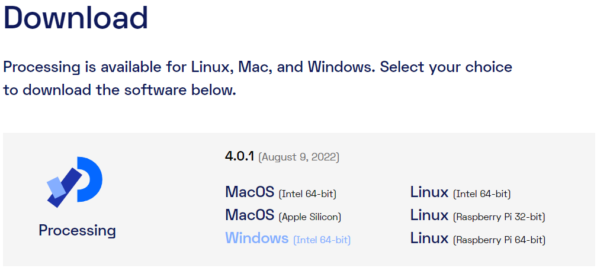
Kies de download die geschikt is voor jou operating systeem. In de meeste gevallen is dit Windows. Om te bepalen of je de 64-bit of de 32-bit moet hebben, kun je de instructie in Bijlage A raadplegen. In de meeste (nieuwere) laptops is dit 64-bit
Stap 2: Zipfile verplaatsen van Downloads naar map naar keuze
Verplaats de gedownloade Zipfile (processing-4.0.1-windows-x64.zip) naar een map van je keuze, bij voorkeur naar C:\Program Files. Verplaatsen van een bestand kan door het te verslepen naar de nieuwe directory of door te selecteren en dan Ctrl-c en naar de nieuwe directory te gaan en hier Ctrl-v doen.
Stap 3: Uitpakken Zipfile
Pak de Zip file uit in de door jou gekozen map. Zie Bijlage B, als je niet weet hoe je dat kunt doen.
Stap 4: Starten Processing
Ga naar de map C:\Program Files\processing-4.0.1.
Om Processing te starten dubbelklikken op processing.exe.
(Maak er een snelkoppeling van op je Bureaublad, om in vervolg Processing makkelijk op te kunnen starten. Rechtsklik met de muis op de file processing.exe en kies 'Kopiëren naar >' en vervolgens 'Bureaublad (snelkoppeling maken)')
Je krijgt een welkom bericht. Zet het vinkje hiervan uit, en klik vervolgens op Get started.
Normaal gezien zou je nu klaar zijn om een game te maken. Maar om uiteindelijk je game op een Android telefoon te kunnen zetten, moet je nog aan aantal extra stappen uitvoeren.
Stap 5: Toevoegen Android Modus
Klik in de rechterbovenhoek op het vakje met Java, kies vervolgens voor Manage Modes...
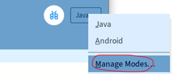 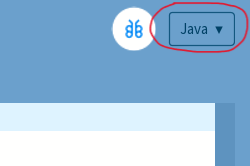
In het scherm dat vervolgens verschijnt, kies je voor Anroid Mode for Processing 4, en klik op de Install knop.
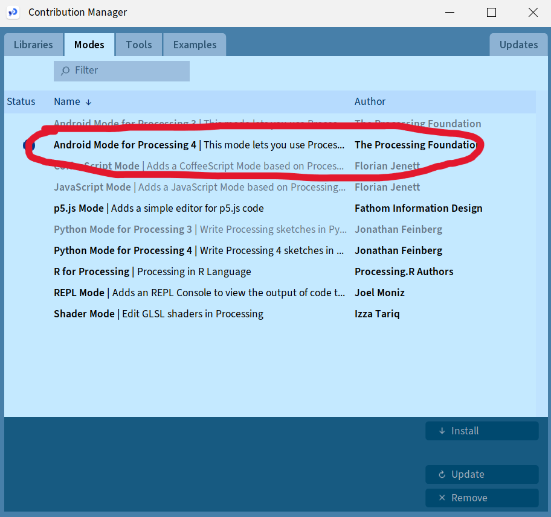
Stap 6: 'Automatische aanvulling' aanzetten
Een heel handige optie om aan te zetten is de 'Automatische aanvulling'. Wanneer je dit aanzet kun je wanneer je een gedeelte van een woord hebt getypt, 'ctrl spatie' toetsen, en dan geeft processing een lijstje met mogelijke opties. Dit kan je veel typewerk schelen.
Om dit in te stellen ga je naar Instellingen: Bestand>Instellingen...
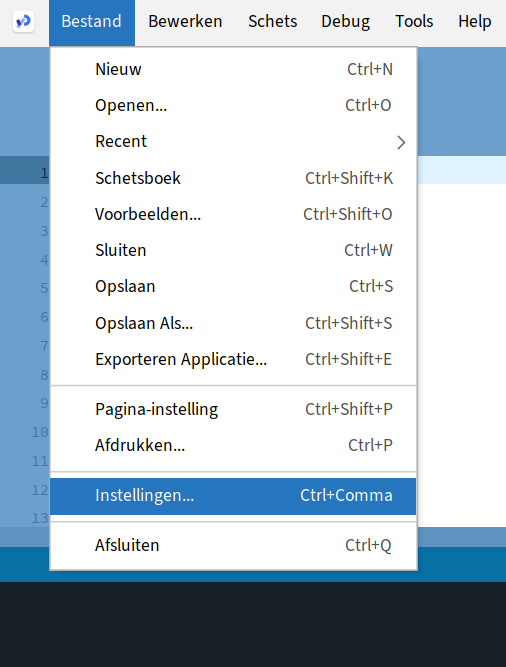
Vink de check box bij 'Automatische aanvulling Ctrl-Spatie' aan.
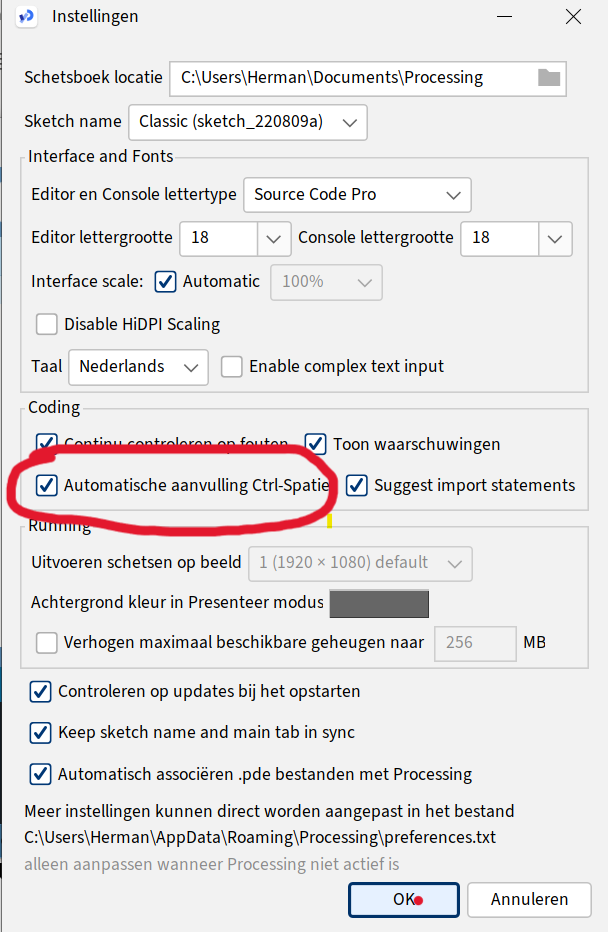
Wanneer je nu bv virus typt en dan Ctrl-Spatie, krijg je een lijstje met opties, in dit geval de namen van variabelen. Met de pijltjestoetsen + Enter kun je er 1 kiezen (of aanklikken met de muis)
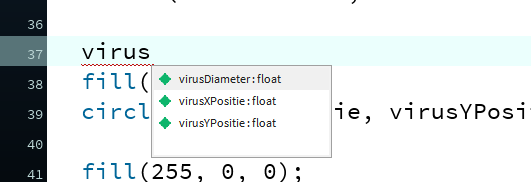
Beginnen met programmeren
Voordat we kunnen beginnen met programmeren, is het goed om nog een paar begrippen helder te krijgen.
Wat is programmeren?
Definitie: Aan de computer instructies (taken) geven, die de computer begrijpt en vervolgens uitvoert, op het moment dat jij wilt en in de volgorde die jij wilt.
Hiervoor moet je wel computertaal spreken. Dat is vrij lastig vandaar dat er talen zijn ontwikkeld die makkelijker te begrijpen zijn voor de mens. Deze worden dan omgezet naar taal die de computer begrijpt (Voorbeelden hiervan zijn Java, Python, C#. Maar zo zijn er nog veel meer.)
In deze workshop wordt Processing gebruikt. Processing is Java met daar bovenop wat extra 'toevoegingen', die het makkelijk maken om snel grafische programmaatjes te schrijven. Op de site van Processing vind je in de zogenaamde Reference alle mogelijkheden die Processing biedt: Processing Reference.
Als je al wat programmeer ervaring hebt of in de toekomst andere talen leert kennen, zul je zien dat er tussen de programmeertalen veel overeenkomsten zijn.
Algoritme
(Zie ook de PowerPoint presentatie)
Een belangrijk begrip in het programmeren is algoritme.
Een algoritme is niet meer dan: een aantal stappen die je zet om een bepaald doel te bereiken. Een algoritme heeft dus niet per se te maken met grote bergen data, technologie en ingewikkelde berekeningen. Een rekensom is een algoritme, maar het bereiden van een maaltijd is dat ook. Je volgt de stappen in een recept om het doel -- eten op tafel -- te bereiken.
Animatie
(Zie ook de PowerPoint presentatie)
Wanneer je bezig gaat met het maken van games is het begrip Animatie ook belangrijk. Definitie animatie: de illusie van beweging door het na elkaar afspelen van verschillende stilstaande beelden.
Mischien heb je zelf weleens een zogeheten 'flipbook' gemaakt. In een blocnootje op elke bladzijde een net iets ander tekeningetje maken en die dan vervolgens snel door je vingers laten gaan zodat het leek alsof er beweging in zat.
Zie voor een voorbeeld het volgende filmpje op Youtube:
Dit is in feite wat we ook doen als we een game programmeren. Steeds het scherm iets wijzigen en dan dit snel achter elkaar laten zien.
Het spel
Een leuk idee hebben voor een spel is 1 ding, maar hoe pak je dat vervolgend aan?
Het idee
Corona Chaser
Je moet proberen aan het corona virus te ontkomen, en ondertussen zoveel mogelijk appeltjes eten, deze leveren punten op. Doel is om zoveel mogelijk punten te scoren, terwijl het corona virus steeds sneller in jouw richting komt. Zodra het corona virus je raakt is het spel afgelopen.
Uitwerking
Simpel beginnen
Eerst zorgen we dat alles functioneert, dan mooi maken met leuke plaatjes. In zijn meest simpele vorm ziet het spel er als volgt uit:
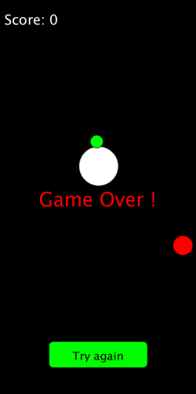
De score: het aantal appeltjes dat is gegeten.
Groene cirkel: Corona virus. Deze komt automatisch op je af. En gaat steeds sneller bij verstrijken van de tijd.
Witte cirkel: onze held, wordt bestuurd door middel van de muis (Op een mobiel zal dat via touch werken). Als onze held in aanraking komt met het virus (botst), is hij dood en eindigt het spel. Als onze held in aanraking komt met een appeltje gaat de score omhoog.
Rode cirkel: appeltje, deze verschijnt (spawned) op een willekeurige plek. Wanneer de held een appeltje 'opeet', verschijnt er onmiddellijk een nieuw appeltje op een willekeurige plek en wordt de score met 1 verhoogd.
Knop om spel opnieuw te spelen. Kun je op klikken met de muis (Op een mobiel zal dat via touch werken). Deze knop verschijnt wanneer het Game Over is.
Je zult zien dat het spel mooi maken (met leuke plaatjes), uiteindelijk helemaal niet zo moeilijk meer is.
Bovenstaand idee gaan jullie zelf stap voor stap uitwerken tijdens deze inspiratiesessie(s).
Aanpak
We starten voor nu even met Processing in de Java modus.
Start Processing en kies voor de Java modus in de rechter bovenhoek:
Je hebt nu de zogeheten editor gestart, die er als volgt uitziet:
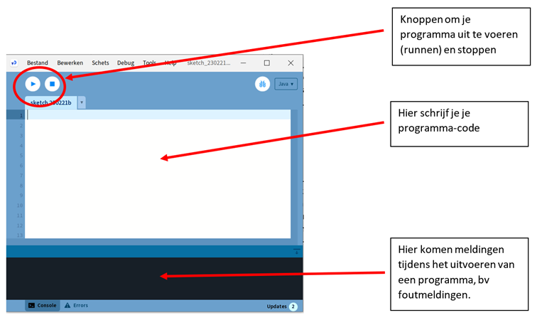
Klik op de Run-knop. Als het goed is verschijnt ongeveer midden in je scherm het volgende venster. Dit is het venster waarin je game zich gaat afspelen (wat de speler dus te zien krijgt)
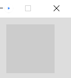
Dus zonder dat we nog maar 1 regel code hebben geschreven, gebeurt er toch al heel wat op de achtergrond. Wat je ziet is een venster met daarin een vierkant van 100 x 100 pixels groot. En wat je niet ziet, en toch gebeurt, is dat dit venster 60 keer per seconde opnieuw wordt getekend.
Dit venster moet dus uiteindelijk ons spel worden!
We moeten dus code-regels schrijven in de editor zodanig dat we uiteindelijk ons idee van de game kunnen realiseren. Om dat te kunnen doen moeten we eerst gaan bedenken welke stappen in welke volgorde we moeten gaan zetten om ons doel (game) te bereiken. Oftewel we moeten een algoritme bedenken.
Er zijn meerdere wegen die naar Rome leiden, dus er is geen sprake van hét juiste algoritme. Ook kan het zijn dat het algoritme wat je hebt bedacht in de praktijk niet altijd handig is. Meestal gaat het dan om de volgorde van de stappen. Dus een algoritme helpt je, maar is niet heilig.
Algoritme
-
Maak het scherm 400 x 800 pixels
-
Schrijf een tekst in linker-boven hoek met de score.
-
Teken een groene cirkel (het coronavirus) op een bepaalde*) positie.
-
Teken een gele cirkel (de held) op de positie waar de muis staat (later: waar het scherm wordt aangeraakt op de mobiel)
-
Teken een rode cirkel (de appel) op een bepaalde*) positie.
-
Als held de appel raakt dan score met 1 ophogen, appel 'spawnen' op een nieuwe willekeurige positie. Spawnen betekent niets meer dan nieuwe coordinaten bepalen voor de appel.
-
Check of coronavirus botst met de held (= gele cirkel raakt groene cirkel) . Als dat zo is dan game-over.
-
Als game-over dan schrijf de tekst "Game Over" in het midden van het scherm.
-
Als game-over, teken een knop (rechthoek met afgeronde hoeken) onderin het scherm (op ongeveer 1/10^de^ vanaf onderrand in het midden) met de tekst "try again" erin.
-
Laat het coronavirus een stap richting de held zetten.
-
Als game-over en er is op de "try again" button geklikt dan start het spel opnieuw.
Stappen 2 t/m 11 worden elke keer uitgevoerd voordat het scherm wordt ververst. Dit betekent dat dit ongeveer 60 keer per seconde gebeurt.
*) Met bepaalde positie wordt in het geval van het coronavirus bedoelt dat elke keer als het scherm ververst wordt het virus een stap in de richting van de held zet. In het geval van de appel wordt de positie random bepaalt bij het spawnen van de appel. Deze positie houdt hij totdat hij opgegeten wordt en er een nieuwe appel gespawned wordt met een random nieuwe positie.
In onderstaand plaatje zijn wat afmetingen getekend, die kunnen ons helpen om verschillende onderdelen op de juiste plek te tekenen.
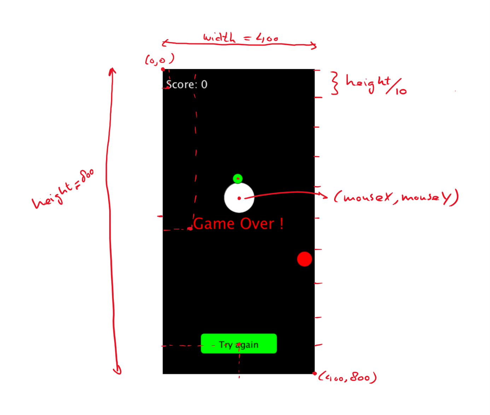
Belangrijk om op te merken dat de linker boven hoek het nulpunt is (0,0) en dat de positieve x-richting naar rechts is en de positieve y-richting naar beneden. Dit in tegenstelling tot een wiskundig assenstelsel, waarin het nulpunt links onder is en de positieve y-richting naar boven.
Programmeren
In dit hoofdstuk worden de belangrijkste elementen van het programmeren in de taal Processing besproken. Er valt heel veel te vertellen hierover, maar we beperken ons hier tot de elementen die we daadwerkelijk gaan gebruiken voor het maken van ons spel.
Functies
Zoals eerder gezegd hoef je veel dingen niet helemaal zelf te programmeren. Processing heeft al een hele hoop standaard 'dingen' beschikbaar. In de Reference (Processing Reference) vind je deze terug.
Deze 'dingen' worden functies genoemd. Een functie is eigenlijk 1 of meer instructies, die samen een bepaalde handeling uitvoeren. Het is makkelijker om dit duidelijk te maken met een voorbeeld.
Neem bijvoorbeeld de functie circle(x, y, d). Deze functie tekent een cirkel met als middelpunt (x,y) en diameter d.
Probeer maar.
Type circle(50, 50, 50); in de editor en klik op de Run-button. Het resultaat ziet er dan zo uit:
| 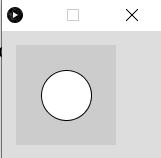 |
Let op de accolade (;) aan het eind van een regel is belangrijk. Zo weet Processing ook dat de regel daar eindigt. Anders leest het gewoon door op de volgende regels, en beschouwt dat dan als 1 lange regel.
Er wordt een cirkel met straal 50 getekend, precies midden in het venster.
Om de kleur en de rand van de cirkel te veranderen, bestaan er andere functies die dit voor je kunnen doen. Hierover later meer.
Door andere waarden mee te geven, kun je cirkels van verschillende groottes en op verschillende posities tekenen. Aan deze functies kun je dus zelf niets veranderen door instructies toe te voegen.
Processing heeft ook een aantal functies die je wel zelf invulling moet geven. De belangrijkste 2 functies zijn de setup() en de draw(). Deze worden door Processing zelf aangeroepen, bij het starten en runnen van het programma. De setup() wordt eerst, eenmalig, uitgevoerd, hierin kun je dus dingen doen die eenmalig uitgevoerd moeten worden, zoals de grootte van het scherm opgeven. De draw() zorgt voor het tekenen van het venster, deze wordt dus 60 keer per seconde uitgevoerd. In de schermafbeelding op de volgende bladzijde zie je hoe dat eruit ziet.
Wat er binnen deze functies uitgevoerd wordt, dat moeten we zelf programmeren. In deze functies komt het grootste gedeelte van ons algoritme terecht.
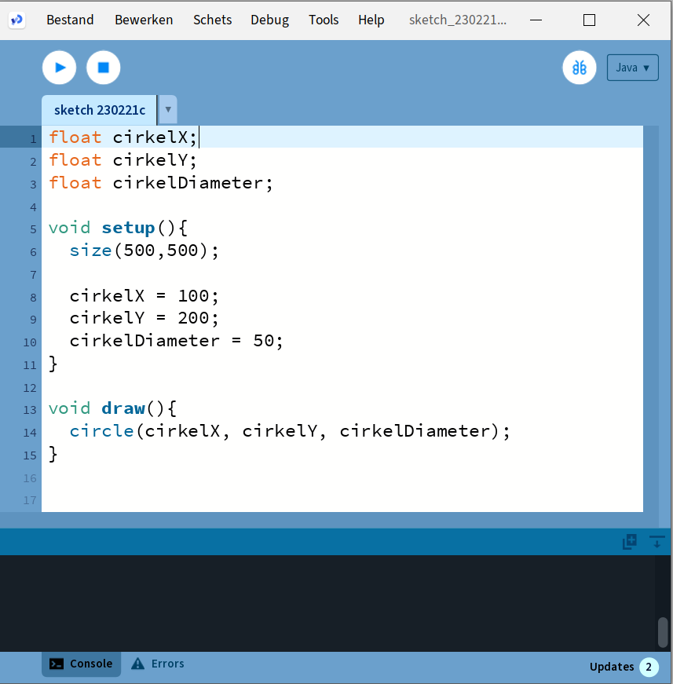
De functies die we gaan gebruiken zijn:
size(b, h) Geeft het venster de breedte b en de hoogte h.
background(r, g, b) Geeft de achtergrond van het venster een rgb kleur (rgb staat voor: red, green, blue). De r,g en b waarde is een getal tussen de 0 en 255. En geeft de mate aan waarin de kleuren rood, groen en blauw in het kleurmengsel aanwezig zijn. Dus 0,0,0 is zwart (afwezigheid van alle kleuren) en 255,255,255 is wit (aanwezigheid van alle kleuren in maximale hoeveelheid).
text("text", x, y) Print de tekst "text" op positie (x,y)
textSize(s) Zet de lettergrootte op s pixels
textAlign(LEFT) Zorgt ervoor dat de tekst links wordt uitgelijnd. Dit betekent in dit geval dat de tekst begint op positie (x,y) en dan naar rechts wordt geschreven. Let op: LEFT moet ook echt in hoofdletters geschreven worden.
textAlign(CENTER, CENTER) Zorgt ervoor dat een tekst zodanig geschreven wordt dat het punt (x,y) precies in het midden/centrum van de tekst is.
fill(r, g, b) Deze functie bepaalt de kleur waarmee de daaropvolgende figuur of tekst wordt geschreven. Dus als je een zwarte cirkel wilt tekenen midden in het standaard scherm dan wordt het:
fill(0, 0, 0);
circle(50, 50, 50);
  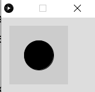Een rode cirkel wordt dan:
fill(255, 0, 0);
circle(50, 50, 50);
  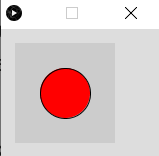
circle(x, y, d) Tekent een cirkel met diameter d op positie (x,y).
rect(x, y, b, h, r) Tekent een rechthoek met de linker-boven hoek op positie (x,y) en een breedte b en hoogte h. De r geeft de ronding van de hoeken aan (0 is een rechte hoek)
rectMode(CENTER) Zorgt ervoor dat het punt (x,y) precies in het midden(centrum) van de rechthoek uitgelijnd wordt. Vergelijkbaar met textMode(CENTER, CENTER).
random(min, max) Deze functie geeft een willekeurig getal terug tussen de waarden min en max. B.v. zou random(0, 10) het getal 4,15389 terug kunnen geven. Maar als ik hetzelfde nog een keer uitvoer kan er een heel ander getal uitkomen. Niet te voorspellen dus, oftewel willekeurig (= random).
millis() Bepaalt het aantal verstreken milliseconden sinds het opstarten van het spel.
dist(x1, y1, x2, y2) Berekent de afstand tussen de punten (x1,y1) en (x2,y2)
Dit zijn voor nu even de belangrijkste bouwstenen voor ons, om een start te maken met ons spel. Later zullen we de cirkels gaan vervangen door plaatjes (images), m.b.v. de volgende functies.
image(img, x, y, h, b) Tekent het plaatje img op positie (x, y) met een hoogte van h en een breedte van b.
loadImage("filename.png") Laadt een afbeelding/plaatje in. Deze is van het type png, gif of jpg.
imageMode(CENTER) Zorgt ervoor dat het punt (x,y) precies in het midden van het plaatje is.
In Bijlage D staan alle functies van Processing die we gaan gebruiken nog iets uitgebreider uitgelegd (vertaling van Reference Processing)
Variabelen
Een ander belangrijk bergrip in programmeren zijn variabelen. Soms heb je een bepaalde (berekende) waarde meer dan één keer nodig in je programma. In dat geval kun je -- i.p.v. die waarde steeds opnieuw te berekenen -- de waarde opslaan in een variabele en dan gewoon de naam van de variabele gebruiken. Technisch gezien is een variabele een plekje in het geheugen van de computer die je zelf een (duidelijke en logische) naam kunt geven en waar je vervolgens een waarde aan kunt geven, en deze waarde kun je vervolgens ook wijzigen. Om je daar een voorstelling van te kunnen maken, zou je een variabele kunnen zien als een doosje waar je een bepaalde waarde instopt en die je er ook weer uit kunt halen en zelfs wijzigen.
Een variabele maken, noemen we 'declareren'. Je moet de computer laten weten hoe je variabele moet gaan heten. Een variabele een waarde geven noemen we 'initialiseren'.
In veel programmeertalen moet je ook aangeven wat het zogeheten type van de variabele is. Is het een geheel getal, of een komma-getal, of een tekst? Dit zijn veel voorkomende types, maar je kunt ook variabelen maken die een plaatje kunnen bevatten.
De types die wij gaan gebruiken voor het spel zijn:
-
int hier kunnen gehele getallen (integers) in.
-
float voor komma-getallen.
-
String voor tekst.
Let op: Processing is hoofdletter gevoelig, als je Int zou schrijven i.p.v. int, dan krijg je een foutmelding. String wordt, anders dan de andere types, met een hoofdletter geschreven. Dit is dus geen typefout. Waarom dit zo is, is op dit moment niet zo belangrijk.
- boolean deze kan 2 waarden bevatten, true of false (waar of nietwaar). Een beetje
een vreemde variabele misschien, maar deze is enorm handig in situaties, waarbij je afhankelijk van of iets waar of nietwaar is, iets wel of juist niet wil doen.
- Pimage hier kun je plaatjes in opslaan.
Je kunt nu bijvoorbeeld een variabele leeftijd maken, waar je je leeftijd in op kan slaan (b.v. 13). Dit kun je als volgt doen:
int leeftijd; met deze regel declareer je de variabele
leeftijd = 13; hier geef je de variabele een waarde
Dit kan ook in 1 keer:
int leeftijd = 13;
In ons programma declareren we variabelen helemaal boven in het programma, boven de void setup(). In de setup() zelf geven we onze variabelen een start-waarde.
Dus bovenstaande variabele zouden we in ons programma als volgt kunnen definiëren en een waarde geven:
int leeftijd;
void setup(){
leeftijd = 13;
}
Naast standaard functies heeft Processing ook een aantal handige standaard variabelen. Degene die wij in ons spel gaan gebruiken zijn:
width hierin is de breedte van het venster opgeslagen
height hierin is de hoogte van het venster opgeslagen
mouseX hierin is de x-positie van de muis-cursor (pijltje) opgeslagen
mouseY hierin is de y-positie van de muis-cursor (pijltje) opgeslagen
mousePressed hierin is opgeslagen of je de linker muis knop hebt ingedrukt of niet. Deze heeft dus de waarde true (er is op de linker button geklikt) of false (er is niet geklikt).
Deze variabelen krijg je cadeau, en hoef je dus niet zelf te maken en dus ook niet bovenin je programma op te schrijven.
Wiskundige operatoren
In alle programmeertalen kun je ook wiskundige berekeningen uitvoeren. De belangrijkste voor nu zijn de onderstaande:
| Operator | Betekenis |
|---|---|
| + | optellen |
| - | aftrekken |
| / | delen |
| * | vermenigvuldigen |
Deze werken overigens alleen met getallen. Zo zal println(10.2 + 3.5) de volgende regel in de console printen:
13.7
Je kan natuurlijk ook berekening uitvoeren met variabelen, deze moeten dan wel van het type int of float zijn (er zijn nog meer standaard typen die getallen kunnen bevatten, maar die laten we even buiten beschouwing).
De volgende code:
float getal1 = 10.2;
float getal2 = 3.2;
println(getal1 + getal2);
Levert dezelfde output op:
13.7
Zoals gezegd werk dit dus alleen met getallen. Een uitzondering is de + operator. Deze werkt ook op strings en variabelen van het type String. Het effect hiervan is dat de teksten die 'opgeteld' worden, als het ware aan elkaar 'geplakt' worden. Even een voorbeeld:
println("Hello" + "World");
levert als output in de console:
HelloWorld
Let op: Zoals je ziet zonder spatie!
Met variabelen, zou het als volgt eruit kunnen zien:
String groet = "Hello";
String iedereen = "World";
println(groet + iedereen);
Dit levert dezelfde output op:
HelloWorld
Wil je een spatie tussen de woorden dan zal je die zelf moeten toevoegen, bijvoorbeeld als volgt:
println("Hello" + " " + "World");
of
println(groet + " " + iedereen);
Dit werkt ook met combinaties van Strings en integer:
println("Mijn leeftijd is: " + 13);
levert op
Mijn leeftijd is: 13
Mooier is natuurlijk om dit behulp van een variabele te doen, dus:
int leeftijd;
leeftijd = 13;
println("Mijn leeftijd is: " + leeftijd);
Dit levert dezelfde output op, maar is flexibeler in gebruik. Ik hoef dan alleen de waarde van de variabele leeftijd te wijzigen, om een andere zin te printen.
Condities
Vaak wil je pas iets uitvoeren als er aan een bepaalde voorwaarde (conditie) is voldoen. Processing heeft hiervoor het if-statement.
De syntax (schrijfwijze) hiervan is:
if ( conditie ) {
statement1;
statement2;
//etc...
}
Let hier op de () en {}, deze zijn verplicht!
Je kan deze if lezen als: ALS conditie waar is DAN voer de statements uit.
Een voorbeeld. Stel ik heb een spel waarin de speler een aantal levens heeft. Als deze op zijn dan is het spel voorbij en wordt er "Game Over" in het midden van het scherm geprint. Het aantal levens hou ik bij in een variabele met de naam aantalLevens.
Dan zou ik het bovenstaande als volgt kunnen programmeren:
if (aantalLevens == 0) {
text("Game Over", width / 2, height / 2);
}
Let op de dubbele ==, dit kun je lezen als 'is gelijk aan'. In tegenstelling tot de enkele =, die gebruikt wordt om een 'waarde toe te kennen' aan een variabele.
De volgende vergelijkingen zijn beschikbaar:
| Vergelijking | Betekenis |
|---|---|
| == | is gelijk aan |
| < | is kleiner dan |
| > | is groter dan |
| <= | is kleiner of gelijk |
| >= | is groter of gelijk |
| != | is ongelijk aan (de ! kun je lezen als 'is niet') |
Ook is het mogelijk om het if-statement uit te breiden met wat er zou moeten gebeuren als niet aan de conditie is voldaan.
if ( conditie ) {
statement1;
statement2;
} else {
statement3;
}
Dit kan je lezen als: ALS conditie waar is DAN voer de statement1 en statement2 uit ANDERS voer statement3 uit.
Als je meerdere condities hebt die moeten gelden, kun je deze 'koppelen' door er && (en) tussen te zetten of || (of). De '|' zit op je toetsenbord, rechts, boven de Enter toets.
if (conditie1 && conditie2){
statement1;
}
Dit kun je lezen als: ALS conditie1 EN conditie2 waar zijn DAN voer statement1 uit.
if (conditie1 || conditie2){
statement1;
}
Dit kun je lezen als: ALS conditie1 OF conditie2 waar is DAN voer statement1 uit.
Standaarden/ Afspraken
In de wereld van de programmeurs is het gebruikelijk om bepaalde standaarden af te spreken, hoe je code schrijft. Enkele afspraken zijn:
Variabelen worden in zogeheten camelCase geschreven. Dit betekent dat een naam van variabele altijd begint met een kleine letter en dat vervolgens ieder zelfstandig naamwoord in die naam begint met een hoofdletter, bijvoorbeeld
int diameterCirkel;
float gespaardBedrag;
Ook is het belangrijk om duidelijke namen te kiezen, bij voorkeur namen die iets zeggen over de waarde die je erin stopt. Zoals bovenstaande voorbeelden.
Verder is het voor de leesbaarheid van je code belangrijk dat je af en toe wat lege regels toevoegt, na bijvoorbeeld een if-statement of voor en na de setup() en draw().
Voeg spaties toe na een komma, voor en na de "=", voor en na een wiskundige operator (b.v. "+"). Dit verhoogt ook de leesbaarheid van je code.
Code die heel compact geschreven is, dus zonder spaties en lege regels, is vaak moeilijker te lezen.
Een andere, belangrijke afspraak, die ook de leesbaarheid verhoogt, is het volgende. Na een "{" begin je de volgende regel met inspringen. Dat wil zeggen dat je een aantal spaties toevoegt vóór de regel, meestal 3.
Je hebt in deze reader daar al wel wat voorbeelden van gezien. Bijvoorbeeld bij de draw() en setup(), maar ook bij het if-statement.
if ( conditie ) {
statement1;
statement2;
} else {
statement3;
}
Zie je dat na een "}" de nieuwe regel begint met een aantal spaties?
Merk op dat bij een "}" er weer van voren af aan begonnen wordt met de regel.
Uitwerking
De code vind je in bijlage E.
Zorg ervoor dat je plaatjes in een directory staan met de naam data.
Let op: dit is een mogelijke uitwerking en niet persé de enige juiste uitwerking. Sterker zelfs, ik denk dat als ik het nog een keer zou uitwerken, het er dan hoogstwaarschijnlijk anders zou hebben uitgezien: andere namen, andere volgorde etc. Dat is heel gebruikelijk als je programmeert. Je probeert continu je code steeds 'beter' te maken: duidelijkere namen, makkelijker aan te passen/ uit te breiden etc.
Android modus
Als je tevreden bent met het resultaat, wordt het tijd om te gaan kijken hoe het er uit ziet op je mobiel. Hiervoor moeten we een paar kleine aanpassingen in de code aanbrengen. In de setup() moet de size(400,800) weggehaald worden. Je kan dit doen door er commentaar van te maken door er // voor te zetten. Processing zal deze regels dan negeren.
In plaats hiervan zet je de volgende 2 regels in de setup();
fullScreen();
orientation(PORTRAIT);
Save je programma en selecteer in de rechter bovenhoek de Android modus. Wanneer je nu over de 'play' button hoovert, zie je de tekst 'Run on device'. Sluit nu je mobiel aan op je laptop met je usb-kabel (Zorg dat je de ontwikkelaarsopties hebt aangezet, zie Bijlage C). Als je nu op de play-button klikt, zal Processing je programma naar je telefoon sturen/installeren en starten.
Wanneer je de melding krijgt 'no device detected'. Zet dan, terwijl je mobiel aan je computer hangt, de ontwikkelaarsopties een keer uit en weer aan. Wellicht moet je dan ook nog op je mobiel toestemming geven aan je laptop om bestanden over te zetten.
Gebruikte plaatjes
Aanvullingen/uitdagingen
-
Zorg dat de held altijd helemaal binnen het scherm blijft.
-
Hou een highscore bij:
a. Zet de highscore in de regel met de score
b. Voor het bewaren en ophalen van de highscore kun je gebruik maken van de loadStrings() en saveStrings() functies van Processing
-
Maak van het spawnen van de appel een functie spawnAppel(), en gebruik deze 2 keer, in plaats van de gecopieerde code.
-
Zelfde geldt voor het instellen van de variabelen bij de start van het spel (in de setup()) en bij het drukken op de "Try again" button. Maak hiervoor een functie initialiseerSpel() en roep deze op de 2 betreffende plaatsen aan.
De code
De code vind je in bijlage E.
Zorg ervoor dat je plaatjes in een directory staan met de naam data.
Let op: dit is een mogelijke uitwerking en niet persé de enige juiste uitwerking. Sterker zelfs, ik denk dat als ik het nog een keer zou uitwerken, het er dan hoogstwaarschijnlijk anders zou hebben uitgezien: andere namen, andere volgorde etc. Dat is heel gebruikelijk als je programmeert. Je probeert continu je code steeds 'beter' te maken: duidelijkere namen, makkelijker aan te passen/ uit te breiden etc.
Android modus
Gebruikte plaatjes
Aanvullingen / uitdagingen
Bijlage A: Bepalen 64-bit of 32-bit
Ga naar de Instellingen op je computer:
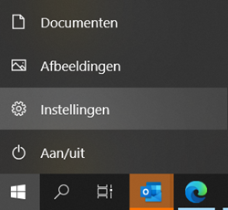
In het Instellingenscherm vervolgens kiezen voor Info. Hier vind je bij het Type systeem of je een 64-bit of een 32-bit machine hebt. In de meeste gevallen al dit tegenwoordig 64-bit zijn.
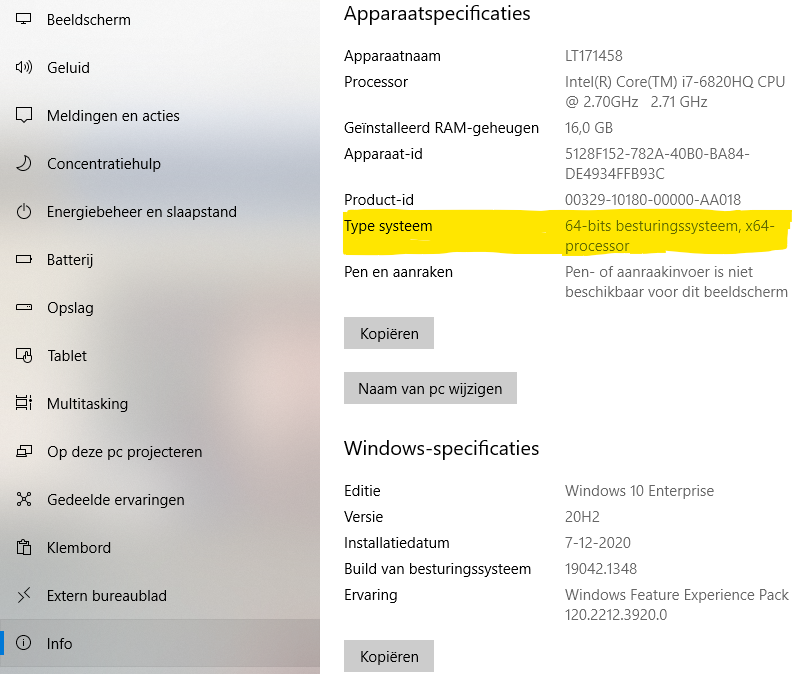
Bijlage B: Zipjes uitpakken.
Eén van de software programmaatjes om Zip-files is WinRAR. Ga naar https://www.winrar.nl/. Download hier de versie die geschikt is voor je operating systeem.
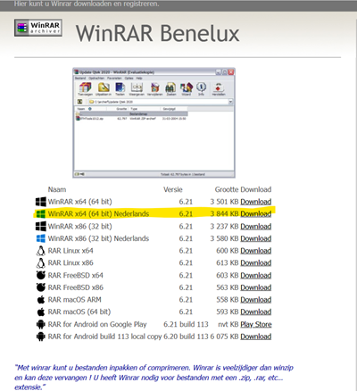
Na installatie kun je in je windows-verkenner rechtsklikken op de zipfile en dan kiezen voor Hier uitpakken.
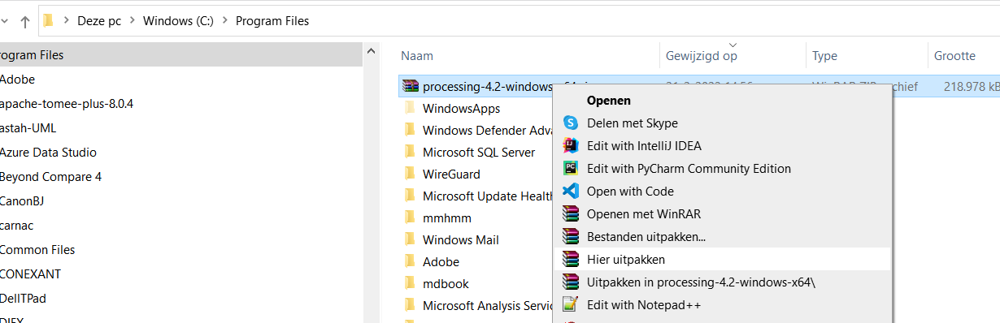
Bijlage C: Ontwikkelaarsopties instellen op je telefoon
Om een spelletje meteen van je computer op je telefoon te kunnen zetten, zonder app-store, moet je de Ontwikkelaarsopties activeren op je telefoon.
De manier waarop je dit precies doet kan van merk tot merk verschillen. Hieronder staat de manier beschreven voor de Samsung Galaxy. Mocht je een ander type telefoon hebben, dan kan het zijn dat het iets anders in zijn werk gaat. In dat geval moet je even op internet zoeken naar de steekwoorden: Ontwikkelaarsopties, <jouw merk/model telefoon>.
Voor een Samsung Galaxy:
-
Open de Instellingen van je telefoon
-
Ga naar Info telefoon
-
Selecteer Software gegevens
-
Zoek naar de informatie over het Buildnummer
-
Druk 7x op deze informatie (geen grap )
-
Na 7x krijg je een melding dat de Ontwikkelaarsopties zijn ingeschakeld.
-
Het kan zijn dat er nu om je pincode gevraagd wordt, deze moet je dan invoeren.
-
Als je nu weer naar de Instellingen gaat, zie je dat er een optie Ontwikkelaarsopties is bijgekomen onderaan de lijst.
-
Selecteer de Ontwikkelaarsopties en zoek naar de USB-foutopsporing optie en zet deze aan.
-
Dat is alles, verder hoef je hier niks te veranderen. Ik zou dat ook niet aanraden, geen idee wat het allemaal inhoud.
-
Het advies is om deze opties weer uit te zetten, zodra je klaar bent met installeren van je spel.
Bijlage D: Processing Reference
Hier vindt je de Nederlandse vertaling van enkele Processing functies uit de Processing Reference (Reference Processing).
setup()
Beschrijving
De functie setup() wordt eenmalig uitgevoerd wanneer het programma wordt gestart. Het wordt gebruikt om initiële eigenschappen zoals schermgrootte te definiëren en om media zoals afbeeldingen en lettertypen te laden wanneer het programma wordt gestart. Er kan slechts één functie setup() zijn voor elk programma. setup() wordt automatisch aangeroepen en mag nooit expliciet worden aangeroepen.
Als de schets een andere dimensie heeft dan de standaardinstelling, moet de functie size() of de functie fullScreen() de eerste regel in setup() zijn.
Opmerking: Variabelen die zijn gedeclareerd in setup() zijn niet toegankelijk binnen andere functies, waaronder draw().
Syntax
setup()
Retourneert
void
draw()
Beschrijving
Wordt direct na de setup() aangeroepen en voert continu de coderegels in het blok uit totdat het programma wordt gestopt of noLoop() wordt aangeroepen. draw() wordt automatisch aangeroepen en mag nooit expliciet worden aangeroepen. Het scherm wordt pas ververst nadat alle coderegels in de draw() zijn uitgevoerd.
Het aantal keren dat draw() in elke seconde wordt uitgevoerd, kan worden geregeld met de functie frameRate().
Het is gebruikelijk om background() aan te roepen aan het begin van de draw() lus om de inhoud van het venster te wissen. Het weglaten van background() kan onbedoelde resultaten opleveren, zoals afbeeldingen de blijven staan en waar vervolgens overheen getekend wordt.
Er kan slechts één draw() -functie zijn voor elke programma en draw() moet bestaan als u wilt dat de code continu wordt uitgevoerd of als je gebeurtenissen zoals mousePressed() wilt verwerken. Soms heb je een lege draw() functie nodig om te tekenen in je programma, zoals onderstaand voorbeeld. In dit voorbeeld wordt er bij elke muisklik een cirkel, met diameter 50, getekend op de plek waar er geklikt is.
void setup() {
size(200, 200);
}
// Ondanks dat de draw() hier leeg is, is die wel nodig, zodat het programma
// user input kan verwerken (muiskliks in dit geval).
void draw() {
}
void mousePressed() {
circle(mouseX, mouseY, 50);
}
Syntax
draw()
Retourneert
void
<<Under construction>>
Bijlage E: Code Corona Chaser
//variabelen om de gegevens van de appel in te bewaren.
float appelXPositie, appelYPositie, appelDiameter;
//variabelen om de gegevens van de held in te bewaren.
float heldXPositie, heldYPositie, heldDiameter;
//variabelen om de gegevens van het virus in te bewaren.
float virusXPositie, virusYPositie, virusDiameter;
//variabelen om de gegevens van de knop in te bewaren.
float knopX, knopY, knopBreedte, knopHoogte;
//variabelen om de gegevens van de afbeeldingen in te bewaren.
PImage held, virus, appel;
//variabelen om de stap die het virus zet richting held in te bewaren
float stapX, stapY;
//variabele om de score in te bewaren.
int score;
//variabele om de snelheid waarmee het virus beweegt in te bewaren.
int snelheid;
//variabele om het aantal verstreken milliseconden in te bewaren.
int vorigeVerstrekenMillis;
//variabele om de text grootte in te bewaren.
int textGrootte;
//variabele om de status van het spel in te bewaren: is het spel afgelopen? waar of niet-waar //(true/false)
boolean gameOver;
void setup() {
size(400, 800); //Java modus
//fullScreen(); //Android modus
//orientation(PORTRAIT); //Android modus
//plaatjes inladen
held = loadImage("smiley.png");
appel = loadImage("appel.png");
virus = loadImage("corona.png");
//grootte en startpositie van de appel
appelDiameter = width/20;
appelXPositie = random(appelDiameter/2, width - appelDiameter/2);
appelYPositie = random(appelDiameter/2, height - appelDiameter/2);
//grootte en startpositie van de held
heldDiameter = width/8;
heldXPositie = mouseX;
heldYPositie = mouseY;
//grootte en startpositie van het virus
virusDiameter = width/13;
virusXPositie = 100;
virusYPositie = 100;
//positie en formaat van de 'try again' knop
knopX = width/2;
knopY = height - height/8;
knopBreedte = width / 3;
knopHoogte = height / 20;
//begin- score en snelheid
score = 0;
snelheid = 1;
//variabele om te kunnen bepalen of er al weer een bepaalde tijd is verstreken.
vorigeVerstrekenMillis = 0;
//variabele waarin bijgehouden wordt of het gameOver is (true) of niet (false)
//het spel begint natuurlijk met gameOver = false
gameOver = false;
//textgrootte hangt af va de breedte van het scherm.
//Wanneer je het scherm groter maakt, wordt de tekst ook groter.
textGrootte = width/8;
}
void draw() {
background(0, 0, 0);
//schrijf score
fill(255, 255, 255);
textSize(textGrootte);
textAlign(LEFT);
text("Score: " + score, 10, height/10 - 10);
//teken held, eerst als cirkel, later als plaatje
//fill(255, 255, 0);
//circle(heldXPositie, heldYPositie, heldDiameter);
imageMode(CENTER);
image(held, heldXPositie, heldYPositie, heldDiameter, heldDiameter);
//teken virus, eerst als cirkel, later als plaatje
//fill(0, 255, 0);
//circle(virusXPositie, virusYPositie, virusDiameter);
imageMode(CENTER);
image(virus, virusXPositie, virusYPositie, virusDiameter, virusDiameter);
//teken appel, eerst als cirkel, later als plaatje
//fill(255, 0, 0);
//circle(appelXPositie, appelYPositie, appelDiameter);
imageMode(CENTER);
image(appel, appelXPositie, appelYPositie, appelDiameter, appelDiameter);
if (gameOver == false) {
//als held en appel botsen dan score + 1 en 'nieuwe' appel spawnen op willekeurige positie
heldXPositie = mouseX;
heldYPositie = mouseY;
if (dist(heldXPositie, heldYPositie, appelXPositie, appelYPositie) <= (heldDiameter + appelDiameter)/2) {
score = score + 1;
appelXPositie = random(appelDiameter / 2, width - appelDiameter / 2);
appelYPositie = random(appelDiameter / 2, height - appelDiameter / 2);
}
//het virus komt een stape dichterbij. Hier wordt bepaald hoe groot en in welke richting
//de stap moet zijn
stapX = (heldXPositie - virusXPositie) / dist(heldXPositie, heldYPositie, virusXPositie, virusYPositie);
stapY = (heldYPositie - virusYPositie) / dist(heldXPositie, heldYPositie, virusXPositie, virusYPositie);
virusXPositie = virusXPositie + snelheid * stapX;
virusYPositie = virusYPositie + snelheid * stapY;
//als er 2 seconden zijn verstreken, dan wordt de snelheid van het virus iets opgehoogd
if (millis() - vorigeVerstrekenMillis > 2000) {
snelheid = snelheid + 1;
vorigeVerstrekenMillis = millis();
}
}
//als de held botst met het virus, dan is het game over en wordt de \'try again\' knop getoond
if (dist(heldXPositie, heldYPositie, virusXPositie, virusYPositie) <= (heldDiameter + virusDiameter)/2) {
gameOver = true;
//schrijf de tekst 'Game Over' in het midden van het scherm
fill(255, 0, 0);
textSize(textGrootte);
textAlign(CENTER, CENTER);
text("Game Over!", width / 2, height / 2);
//teken de 'try again' knop
fill(0, 255, 0);
rectMode(CENTER);
rect(knopX, knopY, knopBreedte, knopHoogte, 10);
textAlign(CENTER, CENTER);
textSize(knopBreedte / 5);
fill(0);
text("Try again", knopX, knopY);
//als er op de knop wordt geklikt en als de muis op de knop staat,
//dan wordt het spel opnieuw gestart.
if (mousePressed == true) {
if (mouseX > knopX - knopBreedte / 2 && mouseX < knopX + knopBreedte / 2 &&
mouseY > knopY - knopHoogte / 2 && mouseY < knopY + knopHoogte / 2) {
appelXPositie = random(appelDiameter / 2, width - appelDiameter / 2);
appelYPositie = random(appelDiameter / 2, height - appelDiameter / 2);
heldXPositie = mouseX;
heldYPositie = mouseY;
virusXPositie = 100;
virusYPositie = 100;
score = 0;
snelheid = 1;
vorigeVerstrekenMillis = 0;
gameOver = false;
}
}
}
}